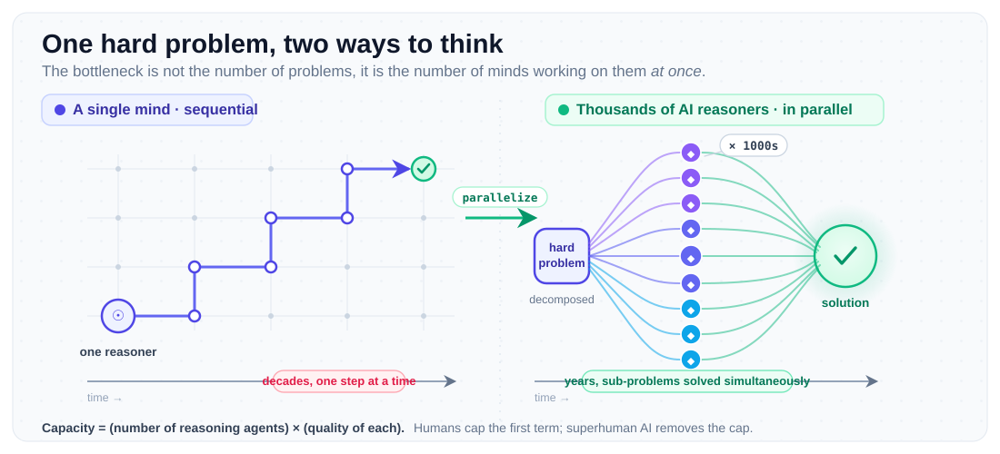

What keeps me up at night is not any particular research problem I am working on. It is a much larger and, honestly, almost embarrassingly ambitious question: at the civilizational scale, what does progress actually require? I keep coming back to the Kardashev Scale as a lens for thinking about this, because it forces you to be honest about the gap between where we are and where we need to be. And the more I sit with it, the more convinced I am that the only path forward runs through AI systems that match or exceed the best humans alive in every field. Not in one field. Every field. Simultaneously.
The Scale of the Problem
Nikolai Kardashev's framework is elegant in its brutality. A Type I civilization harnesses all the energy available on its home planet, on the order of 10^16 watts. We currently sit at roughly 10^13 watts, which puts us at about 0.73 on Sagan's interpolated scale. Getting to Type I means mastering controlled nuclear fusion, building planetary scale energy distribution grids, engineering the climate deliberately, and coordinating industrial output across the entire planet simultaneously. Type II means capturing essentially all the output of your host star, around 4 times 10^26 watts for the Sun, probably through something like a Dyson Swarm of independently orbiting solar collectors. That requires manufacturing structures at a scale comparable to planetary masses, using materials that survive stellar radiation flux and gravitational regimes we have never encountered. Each level is not an incremental extension of the previous one. It is a phase transition in the complexity of problems that civilization must solve, and those problems do not yield to ordinary human effort at human timescales.
The Bottleneck Is Not Resources. It Is Intelligence.
Here is the thing that bothers me about standard techno optimism. People talk about this future as if it is just a matter of time, as if progress is a ratchet that turns itself. But progress does not turn itself. Every meaningful advance in human history traces back to some small number of exceptional individuals who saw something others did not. Fusion energy is still an open problem after seventy years of serious effort and billions in funding. The engineering challenges involved in sustained plasma confinement at the temperatures required for D-T fusion, around 150 million Kelvin, combined with the materials science of the first wall and the instability dynamics of high-beta plasma, are still defeating us. The reason is not money and it is not compute. It is that the problem is genuinely hard, and the number of people who can hold the full complexity of confinement physics, plasma magnetics, tritium breeding, and materials behavior at extreme temperatures simultaneously in their head is very small. This is the real bottleneck. Civilization advances at the speed of its smartest people, and the distribution of exceptional talent is extraordinarily thin.
There are roughly 8 billion humans alive right now. The number who can meaningfully push the frontier of any given hard field is measured in the hundreds, maybe low thousands, globally. Think about what that means concretely: the people who can actually move the needle on inertial confinement physics could probably fit in a mid sized lecture hall. The people working on advanced materials for high temperature superconductors, on novel battery chemistries, on the orbital mechanics of megastructures, each of those communities is tiny. And they are not talking to each other nearly enough, because no one person can be deep enough in all of them simultaneously.
Why Terence Tao Matters to This Argument
Now think about Terence Tao. He is, by most accounts, the greatest living mathematician. Fields Medal in 2006, comfortable working across analytic number theory, harmonic analysis, partial differential equations, combinatorics, compressed sensing, and a dozen other subfields, at a level where he is routinely solving problems that have been open for decades. The thing about Tao is not just that he is smart. It is that he can hold enormous amounts of mathematical structure in his head at once, make connections across fields that specialists within those fields would never make, and move from a high level intuition to a rigorous proof without losing the thread. That combination is extraordinarily rare. There might be ten people alive right now who operate at his level of generality and depth across mathematics. But even Tao can only work on a few problems at a time. He sleeps, he teaches, he has a life. In his most productive years he might publish thirty papers. Civilization scale engineering does not need one Tao. It needs ten thousand Taos, all working simultaneously, on different sub problems, sharing insights in real time. That is not a thing that can happen with humans. The supply constraint is fundamental, not contingent.
The same argument applies across every field. IMO gold medalists represent the absolute peak of mathematical problem solving ability in young people. Every year we identify a few hundred of them globally. Most go on to do good work, some go on to do great work. But the pipeline from exceptional high school mathematician to person who can crack open a new subfield is long, leaky, and slow. Turing Award winners like Dijkstra, Knuth, Hinton, LeCun, and Bengio did not just solve problems within existing frameworks. They created new frameworks that redefined what was even thinkable. Dijkstra gave us the conceptual tools to reason about concurrent and asynchronous systems. Knuth's analysis of algorithms essentially invented the formal study of the field. Hinton, LeCun, and Bengio resurrected neural networks at a time when the entire ML community had written them off and every funding body had moved on. Each of those contributions took decades to mature and required a specific kind of visionary thinking that cannot be manufactured on demand. We cannot just train more Dijkstras. The distribution does not work that way.

The Early Evidence
Honestly, when I look at what has happened with AI over the last few years, I see early evidence that this bottleneck is starting to crack. AlphaFold is the clearest example: protein structure prediction had been an open grand challenge for fifty years, with thousands of researchers chipping away at it. DeepMind's system effectively solved it, and the impact on drug discovery and structural biology has been immediate and massive. That is not an incremental improvement. That is a phase transition. More recently, DeepMind published AlphaGeometry in Nature in early 2024, showing a system that could solve IMO level geometry problems at a level competitive with gold medalists. Geometry is interesting precisely because it requires something beyond pattern matching. You need to introduce auxiliary constructions, to see structure in a figure that is not immediately obvious, and then carry out a clean deductive chain. That is the kind of reasoning we associate with serious mathematical ability, not statistical interpolation over training data. It was a meaningful result.
GPT-4 and the systems that have followed it are demonstrating something different but equally important: broad competence across domains. They are not superhuman in any single field, but they can engage meaningfully with problems in biology, physics, law, medicine, and mathematics at the same time, which is something no human can do at any serious depth. The missing ingredient right now is depth and reliability, the ability to not just retrieve relevant knowledge but to generate genuinely novel insights and verify them rigorously. We are not there yet. But the trajectory is clear, and the rate of improvement is not slowing down.
Parallelizing Genius
The argument I am making is not that AI will replace scientists. That framing completely misses the point. The argument is that civilization's collective problem solving capacity is the product of the number of high quality reasoning agents working on hard problems and the quality of each agent. Right now that first factor is capped by the human population and by the even smaller fraction of that population with the training and cognitive ability to operate at the frontier. AI removes that cap. If we can build systems that reason at the level of an IMO gold medalist in mathematics, a Turing Award winner in computer science, a top experimental physicist, a leading materials scientist, and if we can run thousands of instances of those systems simultaneously, we can compress the timeline on planetary engineering problems from centuries to decades. That compression is what makes the difference between reaching Type I before we exhaust our current energy and climate margins or not. It is not a luxury. At civilizational timescales it is the critical path.
Why ML Inference Efficiency Is Part of This Story
I spend most of my time right now on ML inference and GPU computing, which might seem like a long way from Kardashev scale civilizational strategy. But it is directly connected. The rate at which we can deploy and run these models, the efficiency of inference, the cost per reasoning step, determines how accessible and ubiquitous they become. A model that costs $100 per query stays in research labs. A model that costs $0.001 per query runs in every engineering tool, every simulation pipeline, every materials science workflow in the world. Efficient inference is not a performance optimization in the ordinary sense. It is an access problem, and access determines scale, and scale determines whether the idea of parallelizing genius is a thought experiment or an actual strategy we can execute. When I am profiling a CUDA kernel or working on speculative decoding, I am thinking about this. Every order of magnitude reduction in inference cost is an order of magnitude increase in the number of hard problems that AI can be applied to simultaneously.
There is a version of this future I find genuinely exciting, and it is not the dystopian one that dominates popular imagination. It is a world where civilization's collective intelligence stops being bounded by how many exceptional humans happen to be born in a given generation, happen to survive long enough to do their best work, and happen to find the right collaborators. We are fundamentally limited right now not by ideas or raw resources but by the scarcity of deep, cross domain, sustained reasoning capacity. Type I civilization is an engineering project of staggering complexity. Type II is a physics and materials project at stellar scale. But before either of those is achievable, this is an intelligence project. And we are just starting to build the tools we actually need to run it.